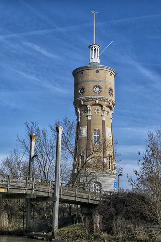

De watertoren in Zwijndrecht is ontworpen door F.A. de Jongh. De toren is gebouwd in tussen 1897-1898 in opdracht van de gemeente Zwijndrecht gebouwd in een Eclectische, aan de Hollandse Renaissance verwante bouwstijl. De watertoren is gelegen aan de Ringdijk en is geen eigendom meer sinds 2011 van het drinkwaterbedrijf Oasen. Het is een rijksmonument en valt onder de bescherming van de Monumentenwet 1988. De watertoren heeft een hoogte van 41 meter en heeft een waterreservoir van 200 / 220 m3